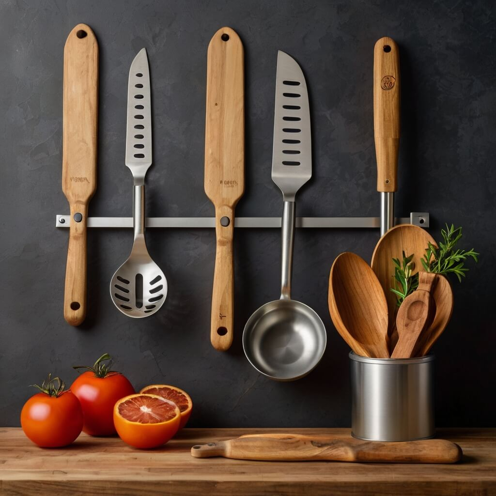

Confiança em cada escolha
Seja para preparar um simples café ou criar pratos elaborados, nossos utensílios acompanham seu ritmo. Criamos soluções sob medida para facilitar cada processo e tornar sua cozinha um ambiente ainda mais acolhedor.
Sobre a BrewBrillianceCuidamos dos detalhes para que você brilhe na cozinha.
Trazemos funcionalidade e beleza para cada momento culinário.

Nossos utensílios são desenvolvidos para atender a todas as
necessidades da cozinha moderna. Com materiais de alta
qualidade, design inteligente e foco na experiência do
usuário, garantimos praticidade e durabilidade em cada peça.
Queremos que você se sinta seguro e confiante ao escolher
nossos produtos. Por isso, nos empenhamos em oferecer
utensílios que sejam não apenas funcionais, mas também bonitos
e duradouros. Desenvolvemos solu es inovadoras para problemas
cotidianos, como a falta de espao na cozinha ou a necessidade
de utens lios mais eficientes.
Al m disso, acreditamos que a arte de cozinhar deve ser
compartilhada e apreciada. Por isso, nos orgulhamos de ter
ajudado milhares de pessoas a transformar suas cozinhas em
espa os mais agrad veis e a criar mem rias incr veis com a fam
lia e os amigos.
Queremos que voc fa a parte dessa hist ria!
Acreditamos que cozinhar deve ser um ato de prazer e criatividade. Por isso, oferecemos utensílios que unem inovação e elegância, ajudando você a explorar novas possibilidades e a tornar cada refeição uma celebração.
O que nossos clientes dizem
Na BrewBrilliance, temos orgulho em saber que nossos produtos fazem a diferença no dia a dia dos apaixonados por cozinha. Veja o que nossos clientes têm a dizer!
Depoimentos reais

Ana L.
"Os utensílios da BrewBrilliance revolucionaram minha cozinha! Além de lindos, são extremamente práticos e de ótima qualidade."
Lucas R.
"Cada detalhe dos produtos é pensado para facilitar o dia a dia. Estou impressionado com a funcionalidade e o design impecável!"
Fernanda S.
"Sempre busquei utensílios que unissem praticidade e estilo, e finalmente encontrei na BrewBrilliance. Simplesmente perfeitos!"
André M.
"Minha cozinha nunca esteve tão bem equipada. Qualidade excepcional e um atendimento atencioso. Recomendo sem hesitação!"
Juliana T.
"Cozinhar ficou ainda mais prazeroso com os produtos BrewBrilliance. Cada peça faz a diferença no preparo das minhas receitas."
Ricardo P.
"Utensílios incríveis! A BrewBrilliance acertou em cheio ao unir durabilidade, design e funcionalidade em cada detalhe."
Inspirando momentos inesquecíveis na sua cozinha.
Utensílios criados para transformar sua experiência na cozinha.
- Cada peça combina funcionalidade e estilo, tornando o preparo das suas receitas mais prazeroso e eficiente.
- Porque cozinhar vai além de alimentar – é um ato de criatividade e conexão.
- Desenvolvemos soluções inovadoras que elevam seu desempenho e despertam seu amor pela gastronomia.
- Nossa equipe é movida pela paixão em criar produtos que inspiram chefs e entusiastas culinários.
Praticidade e durabilidade para facilitar seu dia a dia na cozinha.
- Acreditamos que cada refeição tem o poder de contar uma história – e nossos utensílios ajudam você a escrevê-la.
- Ferramentas projetadas para quem valoriza precisão e qualidade em cada detalhe.
- Utilizamos materiais resistentes e designs ergonômicos para proporcionar conforto e eficiência a cada uso.
- A inovação encontra a tradição: produtos que respeitam a essência da culinária e impulsionam sua criatividade.
Desenvolvimento minucioso para garantir utensílios que fazem a diferença na sua cozinha.
- Crie pratos incríveis com acessórios que potencializam seu talento e sua paixão.
- Consultoria especializada para escolher os melhores utensílios para suas necessidades.
- Estudamos tendências e necessidades reais para oferecer produtos que otimizam cada momento na cozinha.
- Nosso compromisso é entender o que você precisa e entregar qualidade em cada detalhe.